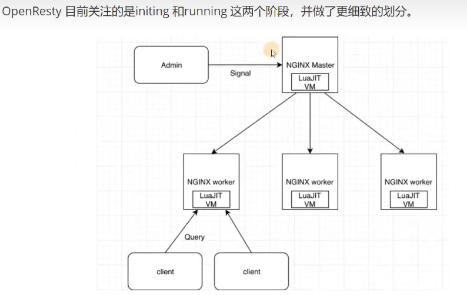

web服务生命周期
OpenResty关注initing和running两个阶段 

initing阶段在OpenResty中分为三个子阶段
configuration：读取配置文件，解析配置参数，设置运行参数
master-initing: 配置文件解析完毕，master进程初始化公有数据
worker-initing: worker进程自己初始化，进程专用的数据
running阶段，收到客户端请求后，会对每一个请求进行以下处理
1. ssl: ssl/tls 安全通信和验证
2. preread: 在开始处理之前预读数据，接收HTTP请求头
3. rewrite: 检查、改写URI,实现跳转/重定向
4. access: 访问权限控制
5. content: 产生响应内容
6. filter: 对content阶段的内容进行过滤加工
7. log: 请求处理完毕，记录日志init_by_lua: master-initing阶段
init_worker_by_lua: worker-initing阶段
ssl_certificate_by_lua: ssl阶段
set_by_lua: rewrite阶段，改写Nginx变量
rewrite_by_lua: rewrite阶段，改写URI,实现跳转/重定向
access_by_lua: access阶段，访问控制&限速
content_by_lua: content阶段，产生响应内容
balancer_by_lua: content阶段，反向代理是选择后端服务器
header_filter_by_lua: filter阶段，加工响应头
body_filter_by_lua: filter极端，加工响应体
log_by_lua: log阶段，用于处理日志


lru cache 访问范围：单worker内

local lrucache = require("resty.lrucache")
cache, err = lrucache.now(200)
cache:set("name", "tom", 0.01)
ngx.sleep(0.02)
local data, state = cache:get("name")
print(data, state)
-
请求来源
is_internal = ngx.req.is_internal()
-
起始时间
ngx.req.start_time()
-
请求头
ngx.req.raw_header()
-
暂存数据
由于OpenResty将请求分成若干阶段，每个阶段都是独立的程序，若需要传递数据，可以使用
ngx.ctx来进行存储。
-
基础信息

-
版本
ngx.req.http_version()
-
方法
ngx.req.get_method() // 获取请求方法
ngx.req.set_method(ngx.HTTP_POST) // 设置请求方法
-
地址
ngx.req.uri
-
请求参数
ngx.req.get_uri_args(数量|多少个参数) // 获取请求参数
-
请求体参数
ngx.req.read_body() // 必须先读请求体数据
ngx.req.get_post_args(数量|多少个参数)
-
ngx.req.get_headers() // 获取请求头
-
ngx.req.set_headers() // 更新请求头
-
ngx.req.clear_headers() // 清理请求头
-
ngx.req.discard_body() // 丢弃数据
-
ngx.req.get_body_data() // 获取数据，如果是nil,可能是数据过大，放在磁盘中，调用
ngx.req.get_body_file()获得相应的临时文件名 -
ngx.req.set_body_data() // 修改请求体数据
ngx.redirect() // 重定向
ngx.exec() // 跳转到内容其他location
ngx.exit() // 立即结束请求
ngx.eof() // 发送EOF指令，后续不在发送内容
-
子请求
res = ngx.location.capture(uri, options) // 发起子请求, 代理uri依赖于Nginx配置的location
method: 子请求的方法，必须使用节里的数字常量 args:子请求的 URI 参数，可以字符串 可以是表 body:子请求的 body 数据，必须是字符串 ctx:子请求使用的 ngx.ctx 临时数据 vars:子请求可能用到的变量，存储在表里 函数执行后会同步非阻塞地等待请求执行完毕，最后返回一个表，包含四个字段 status 子请求的响应状态码，相当于ngx.status; header 子请求的响应头，相当于ngx.header; body 子请求的响应体: truncated 错误标志位， body 数据是否被意外截断。
用法：
-
cosocket协程套接字

例子：
-
http
使用lua发送http请求 https://github.com/ledgetech/lua-resty-http
simple-demo:
local httpc = require("resty.http").new() -- Single-shot requests use the `request_uri` interface. local res, err = httpc:request_uri("http://example.com/helloworld", { method = "POST", body = "a=1&b=2", headers = { ["Content-Type"] = "application/x-www-form-urlencoded", }, }) if not res then ngx.log(ngx.ERR, "request failed: ", err) return end -- At this point, the entire request / response is complete and the connection -- will be closed or back on the connection pool. -- The `res` table contains the expeected `status`, `headers` and `body` fields. local status = res.status local length = res.headers["Content-Length"] local body = res.body
-
redis
https://github.com/openresty/lua-resty-redis
simple-demo
# you do not need the following line if you are using # the OpenResty bundle: lua_package_path "/path/to/lua-resty-redis/lib/?.lua;;"; server { location /test { # need to specify the resolver to resolve the hostname resolver 8.8.8.8; content_by_lua_block { local redis = require "resty.redis" local red = redis:new() red:set_timeouts(1000, 1000, 1000) -- 1 sec -- or connect to a unix domain socket file listened -- by a redis server: -- local ok, err = red:connect("unix:/path/to/redis.sock") -- connect via ip address directly local ok, err = red:connect("127.0.0.1", 6379) -- or connect via hostname, need to specify resolver just like above local ok, err = red:connect("redis.openresty.com", 6379) if not ok then ngx.say("failed to connect: ", err) return end ok, err = red:set("dog", "an animal") if not ok then ngx.say("failed to set dog: ", err) return end ngx.say("set result: ", ok) local res, err = red:get("dog") if not res then ngx.say("failed to get dog: ", err) return end if res == ngx.null then ngx.say("dog not found.") return end ngx.say("dog: ", res) red:init_pipeline() red:set("cat", "Marry") red:set("horse", "Bob") red:get("cat") red:get("horse") local results, err = red:commit_pipeline() if not results then ngx.say("failed to commit the pipelined requests: ", err) return end for i, res in ipairs(results) do if type(res) == "table" then if res[1] == false then ngx.say("failed to run command ", i, ": ", res[2]) else -- process the table value end else -- process the scalar value end end -- put it into the connection pool of size 100, -- with 10 seconds max idle time local ok, err = red:set_keepalive(10000, 100) if not ok then ngx.say("failed to set keepalive: ", err) return end -- or just close the connection right away: -- local ok, err = red:close() -- if not ok then -- ngx.say("failed to close: ", err) -- return -- end } } }